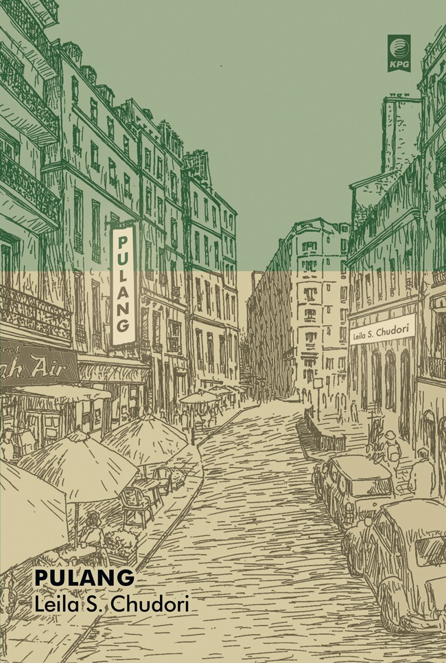
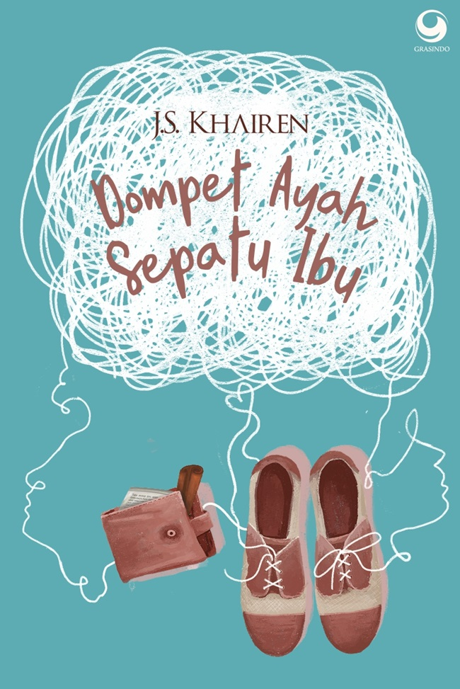

Kurasi buku fiksi dan non-fiksi yang telah diselesaikan untuk memperluas wawasan, pemikiran kritis, serta sudut pandang.

Penulis: Leila S. Chudori, Novel Fiksi
Sedang Dibaca
Penulis: J.S. Khairen, Novel Inspiratif
Selesai DibacaPenulis: Tan Malaka, Non-Fiksi / Sejarah
Selesai DibacaPenulis: Tan Malaka, Autobiografi
Belum DibacaPortofolio